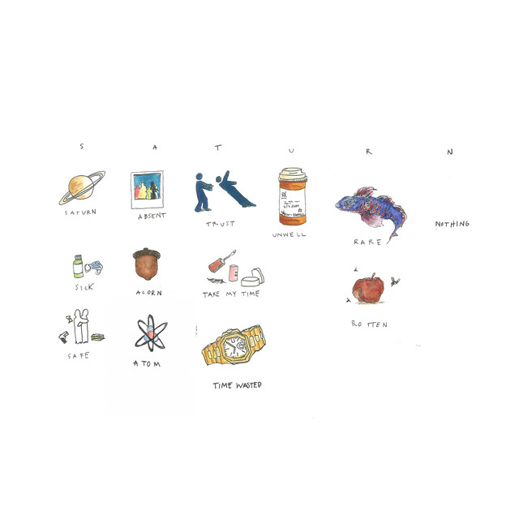

| On SZA | On SZA | On SZA |
|---|---|---|
|
SZA also known as Solána Imani Rowe is an American singer-songwriter, born on November 8, 1989. First let's start off with, how did she get the name SZA? She actually wanted her stage name to be Sosa but Chief Keef already owns that so she just chose SZA because it sounded unique.
|
Rise and Fame:
Now most people may know her from her hit songs like "Kill Bill", "Good Days", and "Snooze".
With this achievement she claimed victory in three different categories in the Grammy's. The song that she won a Grammy for is "Snooze" and best progressive R&B Album "SOS".
| |
|  |
SZA released her latest song "Saturn" on February 22, 2024 which is the lead single for her upcoming album "LANA". The song Saturn explains the confusion of this world and searching for the meaning of life.
"Ctrl" featuring Kendrick Lamar and Travis Scott is the debut album of SZA and was released on June 9, 2017. Some of its notable tracks are "The Weekend" and "Broken Clocks".
|

|
|
SZA's song Good Days was released on December 25, 2020. This track is about moving away from the negativity and the past. This song is mainly about looking forward to the future instead and finding hope amidst darkness with the lyric that goes "Good day in my mind, safe to take a step out, Get some air now."
|
Why this is one of the best songs:
Good Days hit No. 1 on Spotify and reached the Top 10 of the Billboard Charts. This song was even nominated for Best R&B song at the 64th Annual Grammy Awards.
This song is recognized all over the world because of it's dreamy vocals and sense of nostalgia when listening to this track. Many fans also use this song as an escape to get over their partner. |
| Find Popstar on! | ||
|---|---|---|
|
|
|
YouTube |